Bu Hafta En Çok İzlenen Yemek Tarifleri Videoları
-

Pratik Sütlü Aşure Tarifi - Aşure Süslemesi Nasıl Yapılır
226 izlenme 5 gün önce -
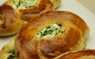
Mayalı Peynirli Karnıyarık Poğaça Tarifi - Sodalı Poğaça
176 izlenme 3 gün önce -
Gerçek Pastane Poğaçası Tarifi - Bayatlamayan Poğaça
170 izlenme 3 gün önce -

Kakaolu Tereyağlı Kolay Çatlak Kurabiye Tarifi
147 izlenme 4 gün önce
-
Ev Yapımı Çikolatalı Ekler Pasta Tarifi - Mini Yaş Pasta
145 izlenme 5 gün önce -
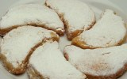
Ay Şeklinde Ağızda Dağılan Bademli Un Kurabiyesi Tarifi
119 izlenme 5 gün önce -
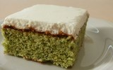
Ispanaklı Kekiyle Kremalı Kolay Yaş Pasta Tarifi
110 izlenme 4 gün önce -
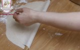
Evde Yufkacı Yufkası Nasıl Açılır - Yufka Hamuru Tarifi
90 izlenme 5 gün önce -
Tereyağlı Şekerli Kurabiye Tarifi / Tereyağlı Kurabiye Nasıl Yapılır
88 izlenme 5 gün önce -
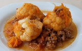
Kıymalı Karnabahar Yemeği Tarifi - Ev Yemeği Tarifleri
77 izlenme 4 gün önce -
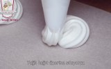
Renkli Beze Tarifi - Köpük Mereng Kurabiye Yapımı
56 izlenme 5 gün önce -
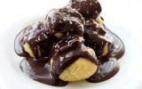
Gerçek Profiterol Tarifi - Hamuru, Kreması Ve Sosunun Yapımı
55 izlenme 6 gün önce -

Sütlü Ve Cevizli Kolay Un Helvası Tarifi
53 izlenme 4 gün önce -
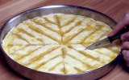
Baklava Dilimi Nasıl Kesilir - Kolay Baklava Kesimi
53 izlenme 3 gün önce -
Mutfakta At Var - Bölüm 1
43 izlenme 3 gün önce -
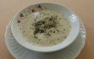
Pirinçli Yayla Çorbası Tarifi - Yoğurt Çorbası Nasıl Yapılır
43 izlenme 3 gün önce -
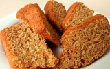
Havuçlu Tarçınlı Kek Tarifi - Kolay Fındıklı Parçalı Nefis Kek
41 izlenme 2 gün önce -
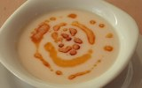
Yoğurtlu Un Çorbası Tarifi - Sarımsaklı Yoğurtlu Kolay Çorba
41 izlenme 3 gün önce -
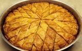
Baklava Tarifi - Kolay Cevizli Antep Baklavası Nasıl Yapılır
38 izlenme 3 gün önce -
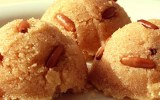
Sütlü İrmik Helvası Tarifi - Çam Fıstıklı Kolay Helva Yapımı
37 izlenme 3 gün önce